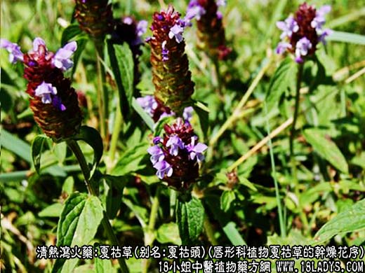
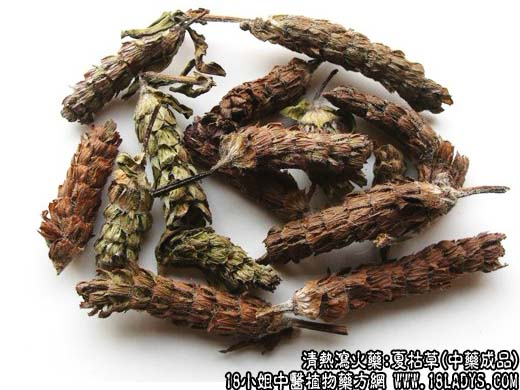
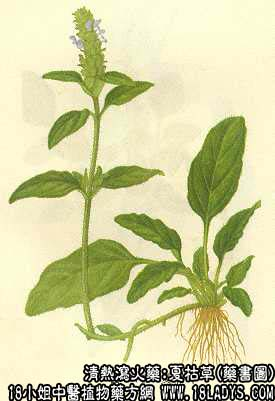

夏枯草为常用中药。《神农本草经》，列为下品。
别名：夏枯头。
来源：为唇形科植物夏枯草的干燥花序。
植物形态：多年生草本，高约30厘米，全株密披白色细毛，茎方形，直立或斜上分枝或不分枝，表面暗红色或褐色。根茎匍匐，下生多数细根。叶对生，菱状狭卵形，全缘或有锯齿，两面均被疏毛。轮伞花序顶生，集成穗状，花序基部有叶状总苞一对，苞片宽肾形，背面与边缘有长硬毛。缘部呈紫色；每苞片内含花三朵；花唇形，紫色或白色。小坚果三棱状长圆形，褐色，有光泽。此草夏末全株枯萎，故有夏枯草之称。
产地：全国大部分地区又野生，主产于江苏、浙江、安徽、湖北等地，以南京地区产品穗长柄短，棕红色，质量最佳。
性状鉴别：花序呈穗状，略扁，由数十朵枯萎的小花组成，多为淡紫色，长2~6厘米，直径8~15毫米。苞片黄褐色对生于花轴上。每苞片内有小花三朵，花冠已脱落，内有小坚果，体轻，气无，味淡。
以花序长，棕红色，不带柄者为佳。
主要成分：含水溶性无机盐，其中68%为氯化钾，又含夏枯草甙，水解后产生熊果酸。
药理作用：1、利尿。作用明显。有效成分为无机盐及熊果酸。
2、抗菌。体外实验对痢疾杆菌，绿脓杆菌、葡萄球菌、溶血性链球菌等有抑制作用。
3、降压：动物实验注射夏枯草煎剂的总无机盐，引起家兔血压下降。临床观察夏枯草对高血压患者能降低血压和减轻伴随症状。
4、抗肿瘤：初步试验证实能抑制动物某些移植肿瘤（如小白鼠子宫颈癌）生长。
炮制：生用。
性味：苦、辛、寒。
归经：入肝、胆经。
功能：清热散结。
主治：瘰疬，肝火目痛，高血压等症。
临床应用：主要用于清热（尤其清肝热）、散结（治疗淋巴结炎等。）
1、用于治疗瘰疬（主要为颈部慢性淋巴结炎、淋巴结核）和瘿瘤（例如单纯性甲状腺肿），为常用要药。用单味夏枯草30g，或配何首乌9g，或配玄参30g，生牡蛎6g，水煎服。对淋巴结核，宜制膏常服（夏枯草30g，或配何首乌9g，或配玄参30g，生牡蛎6g，水煎服。对淋巴结核，宜制膏常服（夏枯草4g，何首乌1kg熬膏，早晚各服一匙）。
2、用于治疗肝火引起的眼赤肿痛（急性结膜炎、流行性角结膜炎）。用夏枯草15g，配菊花15g，蒲公英30g，水煎服。
如有眼痛而又常流冷泪者，可用夏枯草、香附各30g研末，早晚各服3g。
用于治疗肝虚引起的眼珠疼痛，夜间尤剧者，须配当归、白芍、甘草、玄参等，方如夏枯草散。
3、用于治疗肝阳上亢的高血压病，有头痛、耳鸣、眼花、烦热汗出、性情急躁、失眠等，可单用夏枯草30g，或配决明子30g，水煎服，取其有降压作用。兼治高血压眼病。
此外，夏枯草配木蝴蝶还可治疗慢性咽喉炎、舌炎；夏季常用夏枯草泡茶喝，可祛暑散热，又小儿夏季常患疮疖（暑疖）者，可用夏枯草、生地、瘦猪肉煎汤服。
使用注意：1、夏枯草久服对胃有刺激，长期服，用时宜酌加党参、白术。
2、近年来，在治疗肿瘤的中药方剂中，常加入夏枯草一味，尤其在治疗甲状腺肿瘤和纵隔肿瘤时，夏枯草为主要药物之一，但疗效有待进一步观察。
用量：15~30g。
处方举例：夏枯草散（张氏医通》）：夏枯草15g，当归12g，白芍9g，炙甘草3g，玄参9g，水煎服。
注：全国大部分地区习惯用夏枯草的干燥花序。在四川、云南、贵州等地区，以全草药用。